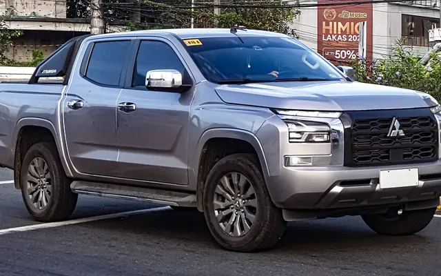

Par Motor › Precios por modelo › Mitsubishi L200
Precio de segunda mano · noviembre de 2026¿Cuánto vale un Mitsubishi L200 de segunda mano?

Precio justo estimado de un Mitsubishi L200 usado en España, año por año, con los kilómetros normales para su edad y en buen estado: de 8.800 € a 31.800 €. Para tasar el tuyo con sus kilómetros reales y su estado, usa el tasador gratis.
Precios del Mitsubishi L200 por año
L200 IV (2006–2015)
Precio de nuevo: 2.5 DI-D 136 CV, 25.000 € · 2.5 DI-D 178 CV, 29.000 €
| Año | Km normales | 2.5 DI-D 136 CV · Diésel | 2.5 DI-D 178 CV · Diésel |
|---|---|---|---|
| 2015 | 100.000 km | 14.500 € | 16.900 € |
| 2014 | 100.000 km | 13.800 € | 16.000 € |
| 2013 | 100.000 km | 13.000 € | 15.100 € |
| 2012 | 100.000 km | 12.300 € | 14.300 € |
| 2011 | 100.000 km | 11.600 € | 13.500 € |
| 2010 | 100.000 km | 11.000 € | 12.800 € |
| 2009 | 100.000 km | 10.400 € | 12.100 € |
| 2008 | 100.000 km | 9.900 € | 11.400 € |
| 2007 | 100.000 km | 9.300 € | 10.800 € |
| 2006 | 100.000 km | 8.800 € | 10.200 € |
L200 V (2015–hoy)
Precio de nuevo: 2.4 DI-D 154 CV, 28.000 € · 2.4 DI-D 181 CV, 32.000 € · 2.2 DI-D 150 CV, 30.000 €
| Año | Km normales | 2.4 DI-D 154 CV · Diésel | 2.4 DI-D 181 CV · Diésel | 2.2 DI-D 150 CV · Diésel |
|---|---|---|---|---|
| 2026 | 10.000 km | 27.800 € | 31.800 € | 29.800 € |
| 2025 | 30.000 km | 24.500 € | 28.000 € | 26.200 € |
| 2024 | 50.000 km | 23.200 € | 26.500 € | 24.800 € |
| 2023 | 70.000 km | 21.900 € | 25.000 € | 23.500 € |
| 2022 | 90.000 km | 19.100 € | 21.800 € | 20.400 € |
| 2021 | 100.000 km | 17.800 € | 20.400 € | 19.100 € |
| 2020 | 100.000 km | 18.000 € | 20.600 € | 19.300 € |
| 2019 | 100.000 km | 18.100 € | 20.700 € | 19.400 € |
| 2018 | 100.000 km | 18.100 € | 20.700 € | 19.400 € |
| 2017 | 100.000 km | 18.100 € | 20.700 € | 19.400 € |
| 2016 | 100.000 km | 17.200 € | 19.700 € | 18.400 € |
| 2015 | 100.000 km | 16.300 € | 18.600 € | 17.400 € |
Kilómetros normales: 15.000 al año en gasolina, híbridos y eléctricos, y 20.000 en diésel, con un máximo de 100.000 km (por encima no tasamos: el precio depende demasiado del historial de cada coche). Cifras redondeadas a 100 €.
Preguntas frecuentes
¿Cuánto vale un Mitsubishi L200 de segunda mano?
Según el año, la versión y los kilómetros, un Mitsubishi L200 usado vale hoy de 8.800 € a 31.800 € en España. El más barato de nuestra tabla es un 2.5 DI-D de 2006 (8.800 €) y el más caro un 2.4 DI-D de 2026 (31.800 €). Son precios justos estimados entre particulares y profesionales, con los kilómetros normales para su edad y en buen estado.
¿Cuánto valor pierde un Mitsubishi L200 al año?
Con unos años encima, un Mitsubishi L200 pierde alrededor de un 8 % de su valor cada año (calculado sobre el 2.4 DI-D de la generación L200 V). Los primeros años la caída es mayor y a partir de los 70.000 km se acelera.
¿Qué motorizaciones tiene el Mitsubishi L200?
En nuestra base de datos hay versiones diésel, en 2 generaciónes: L200 IV y L200 V.
¿Cómo sé si me piden demasiado por un Mitsubishi L200?
Abre el tasador de Par Motor, elige el Mitsubishi L200, el año y los kilómetros reales, y escribe lo que te piden. Te diremos si está por debajo del precio justo (chollo) o por encima (caro). Es gratis y no pide registro ni matrícula.
Otros Mitsubishi
Compara su coste real
El precio de compra es solo una parte. Mira cuánto te costaría al mes con combustible, seguro, neumáticos, mantenimiento y lo que pierde de valor.
Abrir el comparador →